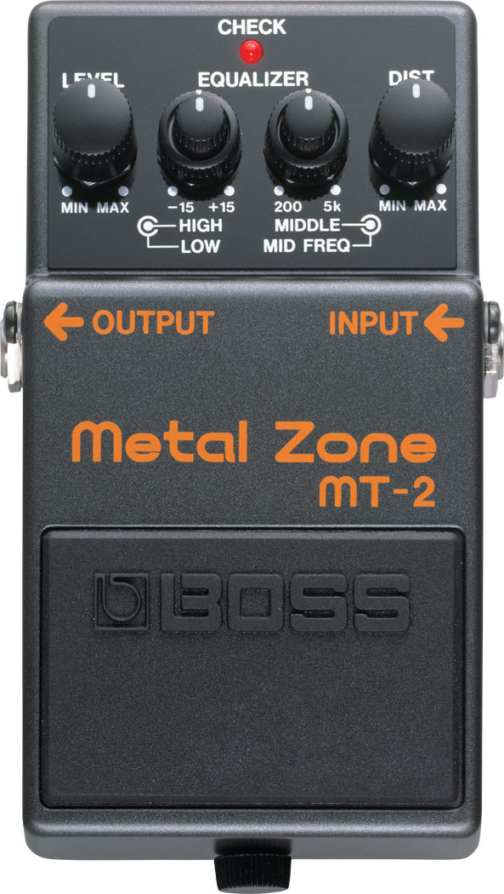

Audio Source
Play Demo Tone
Stop
Load File
Loop
Click a knob to engage the audio context (browser requirement). Then choose a source.
Param readout
Note:
Web demo skips oversampling — the VST version does 4x. Expect slightly more aliasing here than in the DAW plugin.